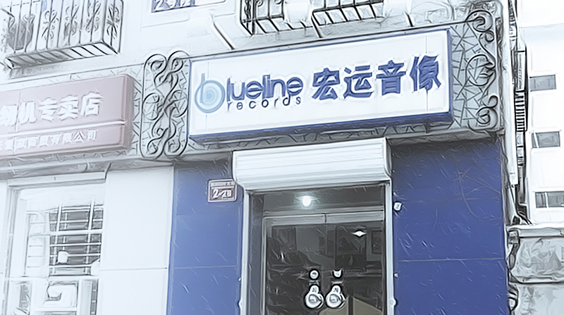

春节假期，人去台空，特放上两期假期特别短版。第一个故事关于买唱片： 读大学的时候周末经常一个人的娱乐项目是，骑车从学院南路出发，经新街口一直往南，骑到西单图书大厦，再原路返回。这条路上的音像店，书店，乐器店对我来说实在是打发时间的好地方。那个年代的新街口唱片业一片繁荣，大大小小卖原盘、高仿、盗版的音像店生意都非常不错。那时候的蓝线唱片，每逢进货的日子，门口都是一堆乐迷等着。纸箱一放出来就开始疯抢，要想有所斩获，务必练好手翻唱片的技术，以及凭盒侧面辨认唱片的能力。每次周末走完这一趟旅程，拖着疲惫的身躯回到宿舍，把淘到的CD放入CD机里，便会感觉无比的温暖和满足。
到了毕业，离得远了，去新街口的次数越来越少，每次去都发现马路慢慢拓宽，百货大楼、商场也陆续建起来。但音像店则越来越少，淘碟的人也越来越少。直到去年，据闻新街口沿线最后一家音像店倒掉，可谓宣告一个时代的结束。稍有庆幸的是，作为见证了那个时代的蓝线唱片，把店挪到了北太平庄，坚守住唱片的最后阵地。自己现在淘碟已比以前理智很多，更多是网购，但每次要能经过三环边上的蓝线唱片都会进去看看，顾客很少，但总会有些人来店里取预定的正版唱片。这萧条的景象难免让人有点心酸，蓝线就像带着我们对新街口的回忆搬到三环边上。 在初到北京时，能见证新街口的繁荣；在即将离开北京时，发现中国每个城市在所谓的“发展”前，都不可避免的殊途同归，北京也不例外。那些岁月，那些记忆，很快也和新居民无关。 作者：依树